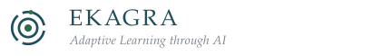
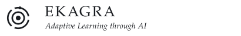
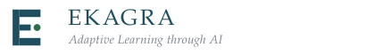
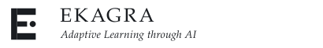
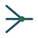
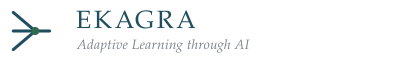
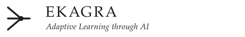

Adaptive Learning through AI — three candidate marks, each drawn as a lightweight SVG so it can be served directly and edited by hand.
Each concept is shown at header size, as a favicon at four pixel sizes, reversed for dark backgrounds, and reduced to a single ink the way a monochrome printer would see it. Nothing here is wired into the application yet.
A point, one closed ring, and an aperture opening outward with a bead riding its edge.

Header lockup
One ink. The bead stays visible as a solid shape and the three arcs remain countable, so the mark survives a photocopied handout.
Attention drawn to a single point, with room opening around it. The most immediately legible of the three.
Focused learning, concentration, and a surrounding structure that could be stages or levels of a path.
Concentric circles are a well-worn motif. The broken outer ring and the bead are what keep it from reading as a plain target.
Strongest at: favicon and small sizes. It is the only concept that still reads clearly at 16px without simplification.
A geometric E whose two long arms and short centre bar narrow attention to one point on its axis.

Header lockup
The letterform is built from solid rectangles, so a single ink is all it ever needs. Print is its best medium.
A capital E that is unmistakably a letter, with a point of attention pulled in tight at its centre.
Academic credibility and institutional weight. The initial ties the mark to the wordmark without repeating it.
It is the most literal of the three and the least abstract. The gap between the centre bar and the dot has to stay open or the dot reads as a lengthened bar.
Strongest at: print, title slides, and any academic context where a letterform earns its place.
Three paths merge into one point, and a single path continues onward.


On dark
Header lockup
One ink throughout. The convergence point stays a solid node, so the figure keeps its structure when photocopied.
Many inputs resolving into one point of understanding, with a path continuing forward from it.
Adaptivity and structured learning most directly of the three. It states the tutor's actual behaviour.
Converging lines are close to network-diagram language. One node and a symmetrical approach are what hold it back; adding more lines would tip it over.
Strongest at: explaining the idea. It is the most narrative mark and the widest of the three.
Generated by build_logos.py and verified by
check_geometry.py. Not referenced by the application —
open preview.html from this folder to compare.